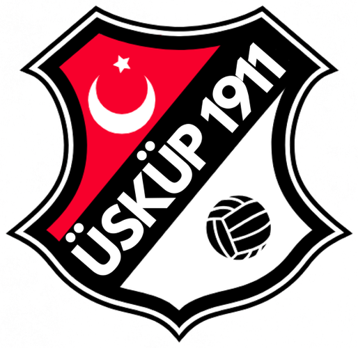
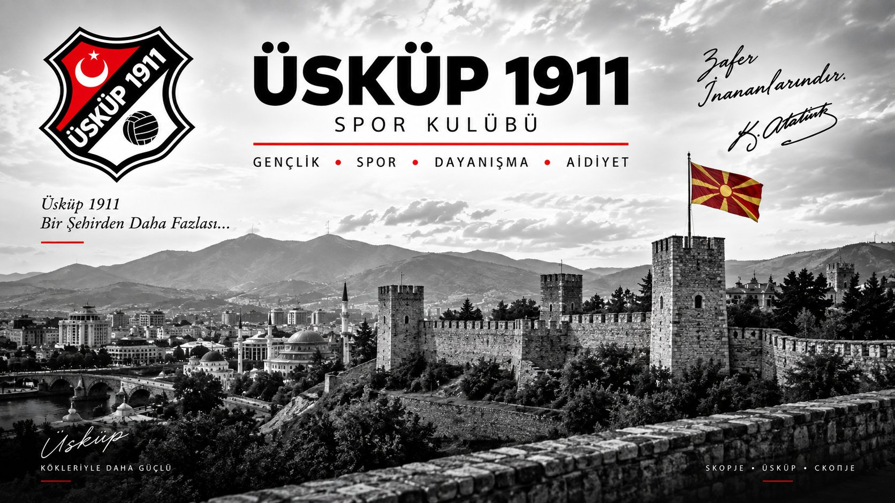
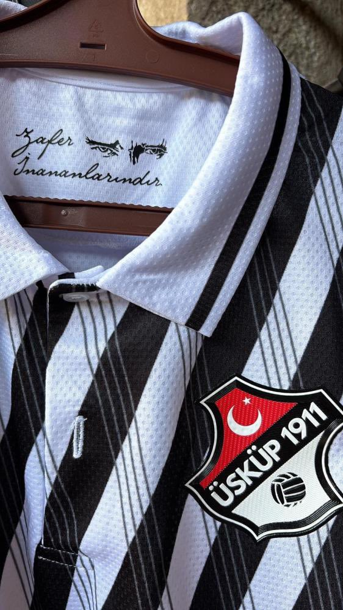
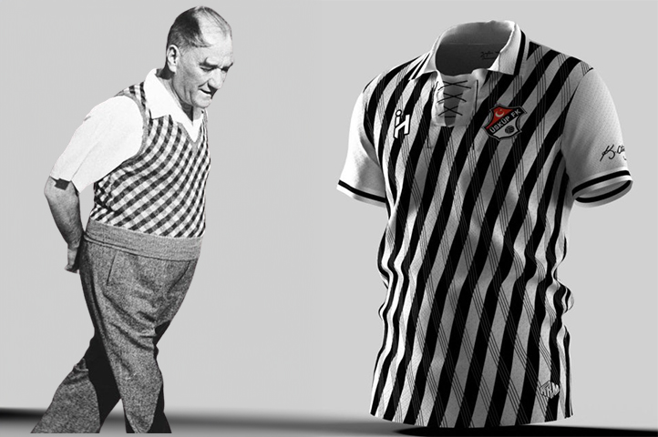
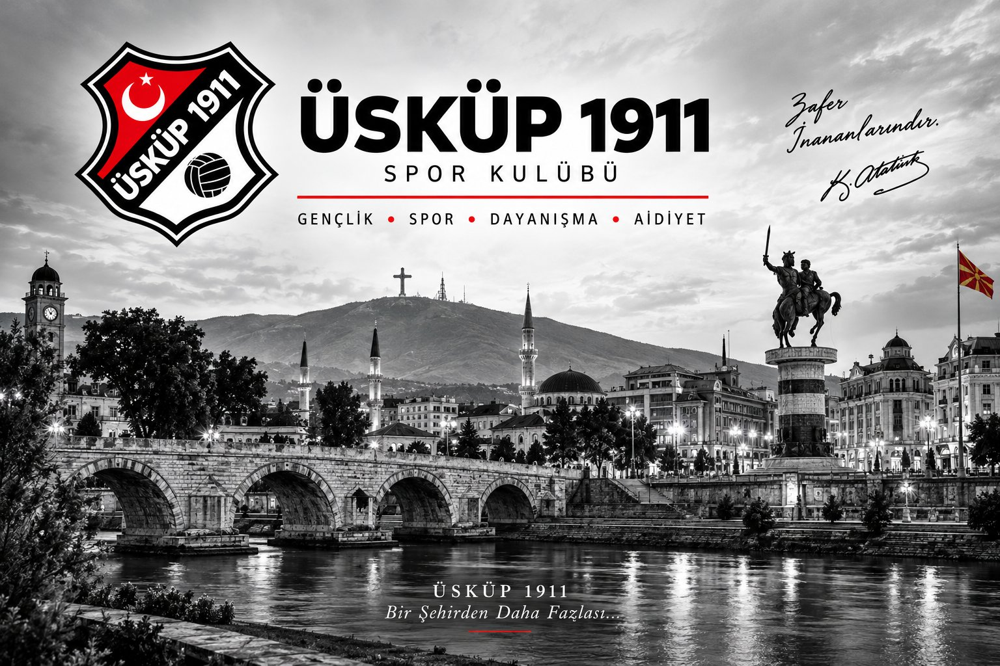
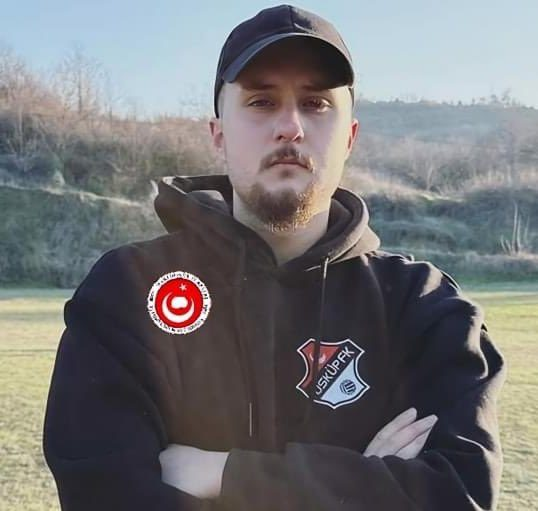

GEÇMİŞTEN GÜNÜMÜZE AYNI RUH
"Ben sporcunun zeki, çevik ve aynı zamanda ahlaklısını severim."Mustafa Kemal AtatürkSPONSOR OL

ÜSKÜP 1911
Üsküp 1911; gençleri sporun disiplini altında bir araya getirmeyi, Türk camiasındaki dayanışmayı güçlendirmeyi ve kendi değerlerini bilen, farklı kültürlere saygılı gençler yetiştirmeyi amaçlayan bir spor kulübüdür.
Kendi kimliğimizi yaşatırken başkasının kimliğine dokunmadan, futbolun ortak diliyle aynı sahada buluşuyoruz.
TAKIMIMIZ
Koşarlar. Düşerler. Ayağa kalkarlar. Kazanırlar. Kaybederler. Ama vazgeçmezler.
Üsküp 1911; gençler, spor ve gelecek için sahada.
GELECEĞİMİZ
Bir gence verilen forma yalnızca bir forma değildir. Disiplin, aidiyet ve kendine inanma duygusunun başlangıcı olabilir.
İŞ ORTAKLIĞI
Göğüs, sırt, kol ve uygun forma alanlarında görünürlük.
Maç günü ve saha çevresinde marka görünürlüğü.
Genç sporcularımızın gelişimine doğrudan destek.
Geleceğin oyuncularını birlikte yetiştirmek.
Sosyal medya, web sitesi ve basın görünürlüğü.
Turnuva, kamp ve özel etkinliklerde iş ortaklığı.
OYUNCU SPONSORLUĞU
İngiltere'de özellikle alt lig kulüplerinde uzun yıllardır başarıyla uygulanan Oyuncu Sponsorluğu modeli, Üsküp 1911'de de hayata geçiyor.
Kulübümüzle iş ortaklığı kurmak isteyen, ancak forma sponsorluğundan farklı bir sponsorluk modeli tercih eden kişi ve işletmeler için hazırlanan bu program; genç sporcularımızın gelişimine katkı sağlarken markanıza da sezon boyunca görünürlük sunuyor.
HABERLER
İçerikler yakında eklenecek.
GALERİ


İLETİŞİM

Kulüp Başkanı
Üsküp 1911 Spor Kulübü
Teknik Direktör
Üsküp 1911 Spor Kulübü
Emekli Dz. Kad.Kd.Bçvş.
Üsküp 1911 Spor Kulübü
Gönüllü Basın Koordinatörü